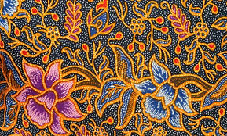

selamat datang di wab kebudayaan indonesia
- beranda
- tentang kami
- kontak
galeri budayan
ragam kebudayan indonesia:
tarian tradisional
tari legong

(sumber gramedia)
tari jaipong

(sumber gramedia)
tari saman

(sumber ngopibareng.id)
warisan budaya yang diakui oleh UNESCO
borobudur(candi)

(sumber wikipedia)
batik indonesia

(sumber jurnalisme investigatif)
wayang kulit

(sumber indonesia.co.id)